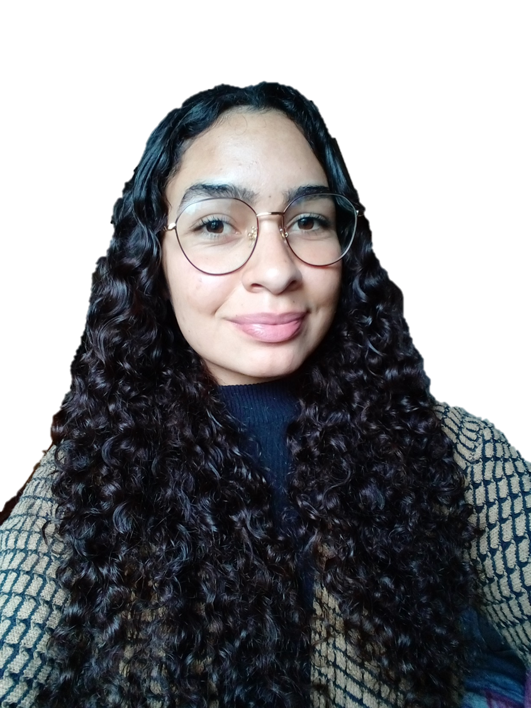

Um pouco sobre quem é Daiane!

Minha trajetória na área de tecnologia...
Sempre fui uma pessoa muito curiosa sobre o mundo tecnológico, era fascinada por filmes de futuros distópicos e avanços tecnológicos que pareciam todos fora da realidade.
Quando em 2019 tive minha primeira oportunidade de realizar um curso de informática pelo Senac, foi fascinante aprender coisas novas e que me fariam entrar na área.
Mas só no final de 2022 decidi cursar a faculdade de Engenharia de Software, estava concluindo meu Ensino Médio integrado com a Formação de Docentes e foi uma mudança radical.
Quando comecei a faculdade em janeiro de 2023, comecei a perceber que só a faculdade não me daria todo o conhecimento necessário para atuar na área, e aí começou minha trajetória de conhecer diversas tecnologias e linguagens de programação e ver com qual me adaptava melhor. Comecei com dados, Python, Power BI, Mobile, Kotlin, mas não me identificava, fui para o Front-End com HTML, CSS e JavaScript, tentei UI/UX Designer...
Mas fui me encontrar no Back-End com Java, banco de dados e computação em nuvem, com a qual dei meu primeiro passo em relação à certificação. Em dezembro de 2023, fui certificada com AWS Cloud Practitioner! Isso me fez encontrar uma meta de carreira: o DevOps, no qual eu poderia juntar a parte de desenvolvimento, com a qual já tenho uma base, com a parte de operação, que fez atiçar aquela curiosidade e vontade de aprender cada vez mais. Sei que é uma área que exige muito conhecimento e dedicação para estar sempre atualizado, e para isso estou dedicada, cada vez mais me aperfeiçoando como desenvolvedora e aprendendo sobre infraestrutura, multicloud, monitoramento, observabilidade, automação e muito mais!
Um pouco mais...
Quando não sou a programadora, a TI, sou apenas uma jovem de 20 anos que está em busca do seu futuro, tentando se conhecer e conhecer o mundo.
Sou apaixonada, ou viciada diria, por futebol, corinthiana de sangue e alma. Gosto de ler livros de ficção, séries policiais e de investigação, drama, romance, poesia (mesmo não entendendo nada), mesmo que ultimamente só tenha tempo para livros de programação e relacionados. Séries é outra coisa que adoro, e turcas são minhas favoritas, além de GOT e TVD.